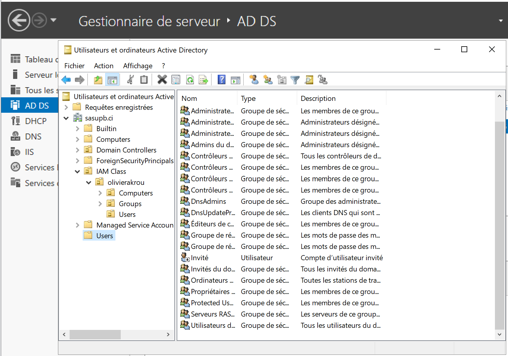
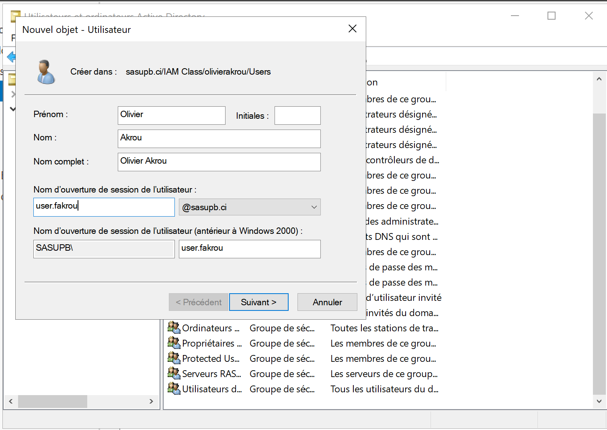
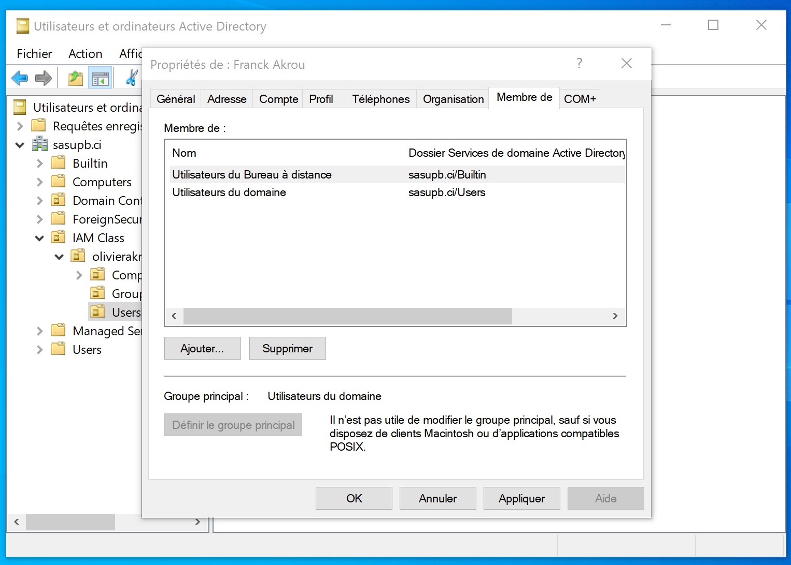
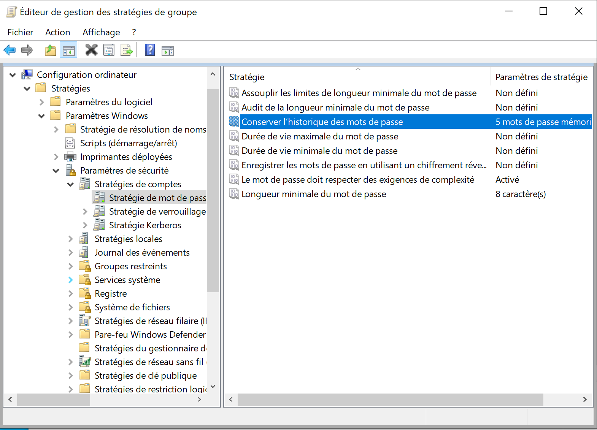
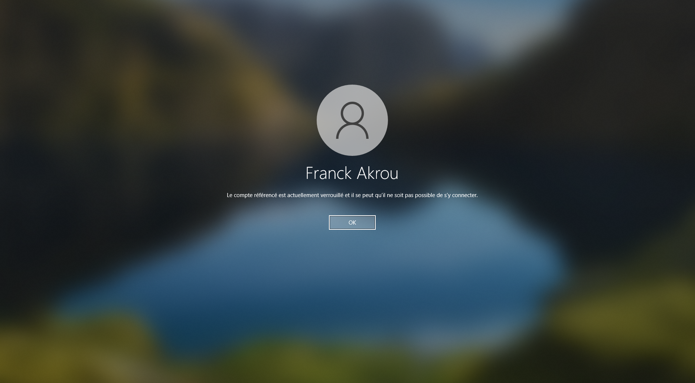
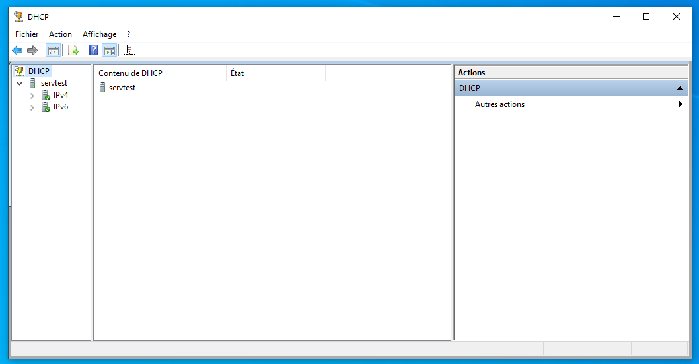
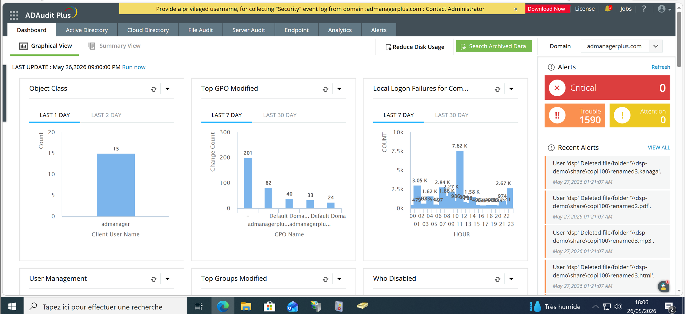

Contexte IAM
Dans un environnement Windows, la gestion des identites ne se limite pas a creer des comptes. Elle doit organiser les objets, limiter les privileges, appliquer des politiques et tracer les actions sensibles.
IAM / Active Directory
Etude de cas sur la gestion des identites : structure AD, comptes, groupes, GPO, politiques de securite, delegation DHCP/DNS, controle d'acces IIS et audit.
Dans un environnement Windows, la gestion des identites ne se limite pas a creer des comptes. Elle doit organiser les objets, limiter les privileges, appliquer des politiques et tracer les actions sensibles.
Etude de cas
La structure en OU sert de base a l'administration : elle separe les utilisateurs, groupes et fonctions techniques afin de cibler les politiques et de garder un annuaire lisible.

Les comptes sont rattaches a des groupes pour eviter l'attribution directe de droits. Cette approche facilite les changements d'affectation et reduit les erreurs de privilege.

Les groupes techniques comme Remote Desktop Users permettent d'accorder un droit precis sans transformer l'utilisateur en administrateur complet. Le principe du moindre privilege devient concret.

La GPO applique une politique de mot de passe durcie. Cette etape montre comment standardiser une regle de securite sur un ensemble d'utilisateurs sans configuration poste par poste.

La politique de verrouillage limite les tentatives d'authentification. La capture prouve que la regle produit un effet visible sur le compte lorsque le seuil est atteint.

La delegation donne a un utilisateur technique la capacite d'administrer un service precis sans ouvrir l'ensemble de l'annuaire. C'est une application directe du controle d'acces base sur le role.

Le controle d'acces par groupe est complete par l'audit. ADAuditPlus permet de suivre les evenements sensibles comme creations d'utilisateurs, changements de droits et echecs de connexion.

Le lab demontre une chaine IAM complete : organisation de l'annuaire, attribution de droits, application de politiques, delegation de services et controle par audit.